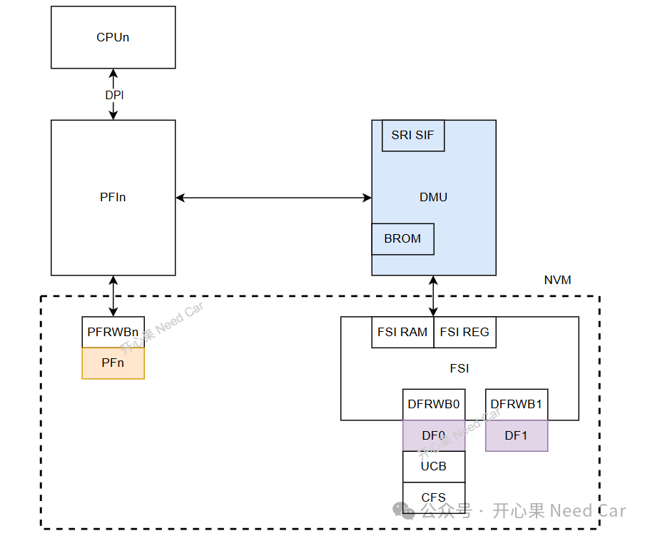
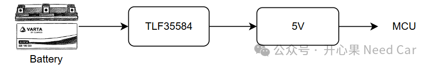

开心果 Need Car · 2026-07-07T06:22:00+08:00 · 微信原文
在基于 Infineon AURIX 的汽车电子开发项目中，经常能够看到这样的需求：
Flash Erase 或 Program 操作前，必须确认供电电压满足要求。在实际项目评审中，这类要求大多出现在 PFlash（Program Flash）相关设计中，而 DFlash（Data Flash）则未必被明确提及。这常常引发一个问题：既然 PFlash 和 DFlash 都属于 Flash 存储器，并且在 AURIX 中共用同一个 Flash 模块，那么为什么 PFlash 对电压检查如此敏感？DFlash 又是否真的可以不检查电压？
进一步地，在采用 SBC（System Basis Chip）例如 TLF35584 的系统中，所谓的“电压检查”究竟是在检查什么？是确认 SBC 输出的 5V/3.3V 电源稳定，还是要监测整车外部电源状态？
这些问题实际上涉及 Flash 编程原理、电源架构以及功能安全设计三个层面。
1.Flash 编程为什么依赖电压
无论是 PFlash 还是 DFlash，其擦除和写入过程都依赖 Flash 内部的高压编程机制。
Flash 存储单元通过改变浮栅（Floating Gate）中的电荷状态来存储数据。为了实现这一过程，Flash 模块会利用内部 Charge Pump（电荷泵）产生高于正常工作电压的编程电压。更多细节可以参考前文《说一说Flash硬件的基本工作原理》。
因此在执行PFlash Program/PFlash Erase/DFlash Program/DFlash Erase操作时，都会对供电电压提出要求。如果编程过程中电压不足，可能导致：Program 失败、Erase 不彻底、Verify 失败、ECC 错误、Flash 数据损坏。
从硬件原理来看：PFlash 和 DFlash 对电压的依赖并没有本质区别。
2.PFlash 和 DFlash 事实上共用 Flash 模块
以 AURIX TC3xx 为例，其架构大致如下：

PFlash 与 DFlash 共用：DMU（Data Management Unit）、Flash State Machine、内部高压产生电路、编程控制逻辑。因此：PFlash Voltage Requirement ≈ DFlash Voltage Requirement。从硬件实现上讲，并不存在“PFlash 必须检查电压，而 DFlash 不需要检查”的依据。
3.为什么项目中更强调 PFlash
虽然底层原理相同，但两类存储区域的重要程度不同。
PFlash 通常存储Bootloader/Application Code/Safety Function/OTA升级镜像/安全相关算法...如果 PFlash 编程失败：Bootloader损坏、Application无法启动、ECU变砖、安全功能失效等等，可能导致整个 ECU 无法工作。
DFlash 通常存储NvM数据/配置参数/Odometer/诊断信息/用户配置参数等。如果写入失败：参数丢失、恢复默认值、重新学习...多数情况下 ECU 仍然可以启动。
因此，很多 OEM 和安全需求会特别强调：
PFlash 操作前必须进行电压检查。
其本质并非 PFlash 的电压要求更高，而是失效后果更严重。
4.DFlash 是否真的可以不检查电压
电压监测可能已经存在于：SBC/MCU电压监测模块/SMU/EVR/Flash Driver。因此应用开发人员可能看不到显式的电压判断逻辑。实际上系统已经在底层完成了保护。
5.电压检查究竟检查什么
这是项目中最容易产生误解的地方。很多人认为：
既然有 TLF35584 给 MCU 提供稳定的 5V 和 3.3V，那么是不是已经满足要求了？
答案是不一定。
例如车辆蓄电池：12V Battery由于发动机启动、负载变化等因素可能波动：14V->12V->10V->8V。这种变化最终会影响 SBC 输入端。
第二层：SBC输出
TLF35584 可以对输入电压进行调节并输出：5V/3.3V。同时具备：Undervoltage Detection、Overvoltage Detection、Fail-Safe机制。
从系统角度看：

因此，很多人会认为：SBC正常 = Flash可以安全编程，但实际上并不完全成立。
Flash 真正关心的是：MCU内部实际工作电压。例如：VDD/VDDP3/EVR输出/Flash Macro电源。这才是 Flash 编程时的直接供电来源。
6.为什么仅依赖 SBC 可能不够
最危险的情况往往不是突然断电，而是缓慢掉压。例如：Battery 12V->10V->9V->8V。此时可能出现：TLF35584仍然输出，MCU仍在运行，程序仍在执行。但：Flash Charge Pump已经无法满足编程要求。结果就是：DFlash Program失败、PFlash Program失败、甚至造成数据损坏。
这也是很多功能安全项目要求：Flash操作前检查实际电压状态。而不仅仅检查 SBC 是否在线。
7.ASIL 项目中的常见方案
方案一：完全依赖 SBC
TLF35584监控供电->允许Flash操作 |
实现简单，但安全裕度有限。
方案二：检查 MCU 电压
Flash Write->ADC读取VDD ->满足门限->开始编程 |
这是最常见的方案。
方案三：双重检查
SBC状态正常 && MCU供电正常 && 无SMU告警 |
然后才允许：Flash Program
结论
PFlash 与 DFlash 在 AURIX 中共用 Flash 模块和高压编程机制，因此从硬件角度看，两者都需要满足电压要求才能安全执行擦除和写入操作。
项目中经常特别强调 PFlash，并不是因为 PFlash 对电压更敏感，而是因为 PFlash 存储的是程序代码，一旦写入失败可能导致 ECU 无法启动，其风险远高于普通 DFlash 数据损坏。
此外，Flash 操作中的“电压检查”并不只是确认 TLF35584 是否输出 5V 或 3.3V，更重要的是确认 MCU 实际工作电压是否满足 Flash 编程要求。尤其是在车辆掉压过程中，即使 SBC 尚未触发复位，Flash 编程条件也可能已经被破坏。
因此对于采用 AURIX、TLF35584 和 AUTOSAR 架构的功能安全项目，一个更合理的原则是：无论是 PFlash 还是 DFlash，只要涉及擦除或编程操作，都应在确认 MCU 实际供电电压满足 Flash 编程要求后再执行；对于存储 ASIL 数据的 DFlash，其电压检查的重要性并不低于 PFlash。
往期精彩回顾